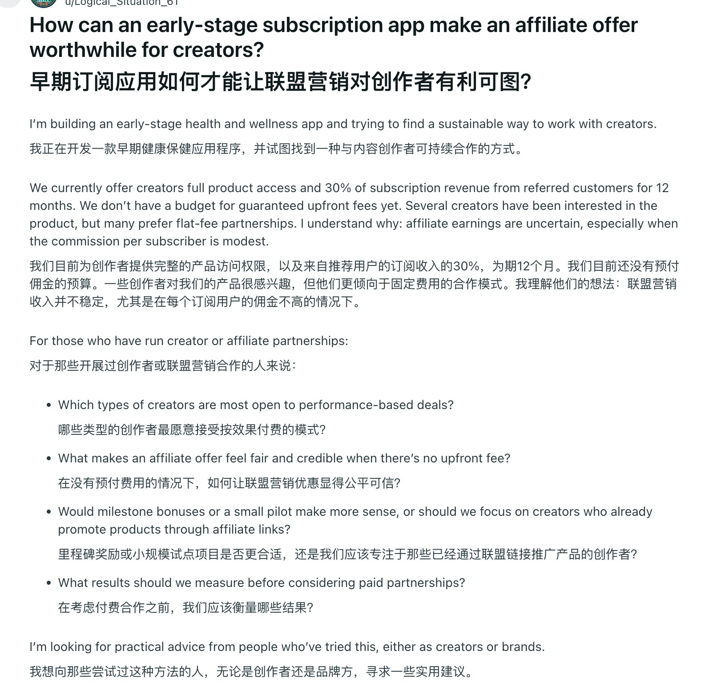

做海外软件工具的开发者，我强烈建议你们把这图里的 Reddit 发帖方式存下来当模板。
很多开发者在 Reddit 发帖被喷推广，核心原因是：把产品当主角，把社区当流量池。
这篇帖子虽然互动不多，但内容结构堪称教科书级的“软启动”：
1. 隐去品牌，只抛业务真问题。不求大家试用，只讨论“早期订阅制如何让分销觉得划算。
2. 坦白约束，建立信任感。直接说明我们没预算付保底预付费，只有 30% 分成，真诚且不画饼。
3. 结构化提问，降低回答门槛。文末把问题拆成两个具体的选择题探讨，让大家能接话。
